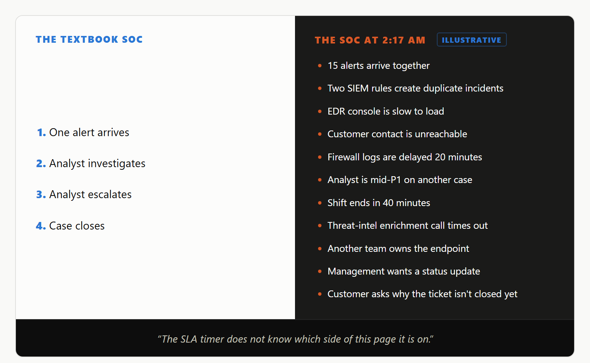
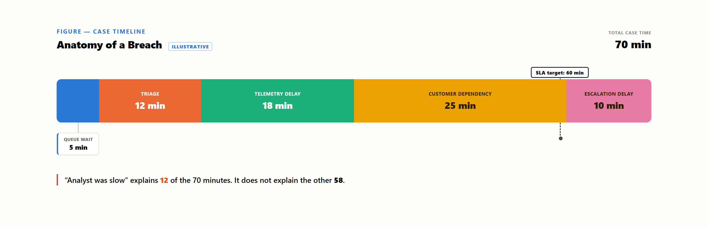

Every SLA document describes the same incident: alert, analyst, escalation, close. That version runs on a quiet Tuesday with a fully staffed floor. The version that actually decides whether the SLA is met arrives at 2:17 AM — and the clock cannot tell the difference.
As a training deck: one alert, one analyst, clean triage, escalation, disposition — no contention. That is the version every SLA clause is quietly written against.
As a Tuesday night shift: fifteen alerts land in one window, two un-deduplicated into separate records for one chain, the EDR console lags, the customer's contact doesn't answer, a threat-intel lookup times out, the analyst is mid-P1 elsewhere with forty minutes left in the shift, and the endpoint turns out to belong to another team — so containment authority isn't even the SOC's. No single item breaks the case; all of them together is what a real shift looks like, and the timer does not pause.

Both run on the same clock — elapsed time between two timestamps — which cannot tell minutes spent investigating from minutes lost to contention. That gap is where most SLA disputes live.
Not a staffing failure — four properties a runbook cannot model:
| Factor | Runbook assumes | Shift delivers |
|---|---|---|
| Information | Evidence is ready when needed. | Evidence arrives piecemeal; phases overlap and re-open. |
| Staffing | One analyst, one case. | Concurrent cases, shift boundaries, an unbroken queue. |
| Tooling | Console actions return instantly. | Correlation/enrichment latency is real, not contractually published. |
| Human factors | No clock on the wall. | Fatigue sets in; handover content is loosely standardized. |
Kent, Tuptuk, and Becker (2026), in an academic study of cybersecurity incident-response shift handovers, found limited industry-wide guidance on handover practice — so a case crossing a shift boundary keeps only what the outgoing analyst thought to write down.
Each factor above consumes traceable minutes, reconstructed below for one P1-class case:

Active triage accounts for twelve of the case's seventy minutes; the rest is queue wait, telemetry lag, a customer-side dependency, and an escalation delay confirming ownership. A reviewer seeing only the 70-minute total concludes the SOC was slow; one seeing the breakdown finds working time well inside target, with the overage sitting almost entirely in categories no analyst controls.
The book teaches phases. The shift teaches triage math under contention.